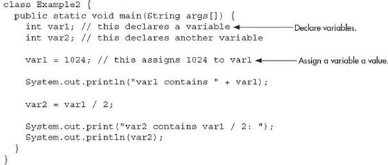

Chapter 1
Java Fundamentals
Key Skills & Concepts
 Know the history and philosophy of Java
Know the history and philosophy of Java Understand Java’s contribution to the Internet
Understand the importance of bytecode
Know the Java buzzwords
Understand the foundational principles of object-oriented programming
Create, compile, and run a simple Java program
Use variables
Use the if and for control statements
Create blocks of code
Understand how statements are positioned, indented, and terminated
Know the Java keywords
Understand the rules for Java identifiers
The rise of the Internet and the World Wide Web fundamentally reshaped computing. Prior to the Web, the cyber landscape was dominated by stand-alone PCs. Today, nearly all computers are connected to the Internet. The Internet, itself, was transformed—originally offering a convenient way to share files and information. Today it is a vast, distributed computing universe. With these changes came a new way to program: Java.
Java is the preeminent language of the Internet, but it is more than that. Java revolutionized programming, changing the way that we think about both the form and the function of a program. To be a professional programmer today implies the ability to program in Java—it is that important. In the course of this book, you will learn the skills needed to master it.
The purpose of this chapter is to introduce you to Java, including its history, its design philosophy, and several of its most important features. By far, the hardest thing about learning a programming language is the fact that no element exists in isolation. Instead, the components of the language work in conjunction with each other. This interrelatedness is especially pronounced in Java. In fact, it is difficult to discuss one aspect of Java without involving others. To help overcome this problem, this chapter provides a brief overview of several Java features, including the general form of a Java program, some basic control structures, and operators. It does not go into too many details but, rather, concentrates on the general concepts common to any Java program.
The Origins of Java
Computer language innovation is driven forward by two factors: improvements in the art of programming and changes in the computing environment. Java is no exception. Building upon the rich legacy inherited from C and C++, Java adds refinements and features that reflect the current state of the art in programming. Responding to the rise of the online environment, Java offers features that streamline programming for a highly distributed architecture.
Java was conceived by James Gosling, Patrick Naughton, Chris Warth, Ed Frank, and Mike Sheridan at Sun Microsystems in 1991. This language was initially called “Oak” but was renamed “Java” in 1995. Somewhat surprisingly, the original impetus for Java was not the Internet! Instead, the primary motivation was the need for a platform-independent language that could be used to create software to be embedded in various consumer electronic devices, such as toasters, microwave ovens, and remote controls. As you can probably guess, many different types of CPUs are used as controllers. The trouble was that (at that time) most computer languages were designed to be compiled for a specific target. For example, consider C++.
Although it was possible to compile a C++ program for just about any type of CPU, to do so required a full C++ compiler targeted for that CPU. The problem, however, is that compilers are expensive and time-consuming to create. In an attempt to find a better solution, Gosling and others worked on a portable, cross-platform language that could produce code that would run on a variety of CPUs under differing environments. This effort ultimately led to the creation of Java.
About the time that the details of Java were being worked out, a second, and ultimately more important, factor emerged that would play a crucial role in the future of Java. This second force was, of course, the World Wide Web. Had the Web not taken shape at about the same time that Java was being implemented, Java might have remained a useful but obscure language for programming consumer electronics. However, with the emergence of the Web, Java was propelled to the forefront of computer language design, because the Web, too, demanded portable programs.
Most programmers learn early in their careers that portable programs are as elusive as they are desirable. While the quest for a way to create efficient, portable (platform-independent) programs is nearly as old as the discipline of programming itself, it had taken a back seat to other, more pressing problems. However, with the advent of the Internet and the Web, the old problem of portability returned with a vengeance. After all, the Internet consists of a diverse, distributed universe populated with many types of computers, operating systems, and CPUs.
What was once an irritating but a low-priority problem had become a high-profile necessity. By 1993, it became obvious to members of the Java design team that the problems of portability frequently encountered when creating code for embedded controllers are also found when attempting to create code for the Internet. This realization caused the focus of Java to switch from consumer electronics to Internet programming. So, while it was the desire for an architecture-neutral programming language that provided the initial spark, it was the Internet that ultimately led to Java’s large-scale success.
How Java Relates to C and C++
Java is directly related to both C and C++. Java inherits its syntax from C. Its object model is adapted from C++. Java’s relationship with C and C++ is important for several reasons. First, many programmers are familiar with the C/C++ syntax. This makes it easy for a C/C++ programmer to learn Java and, conversely, for a Java programmer to learn C/C++.
Second, Java’s designers did not “reinvent the wheel.” Instead, they further refined an already highly successful programming paradigm. The modern age of programming began with C. It moved to C++, and now to Java. By inheriting and building upon that rich heritage, Java provides a powerful, logically consistent programming environment that takes the best of the past and adds new features required by the online environment. Perhaps most important, because of their similarities, C, C++, and Java define a common, conceptual framework for the professional programmer. Programmers do not face major rifts when switching from one language to another.
One of the central design philosophies of both C and C++ is that the programmer is in charge! Java also inherits this philosophy. Except for those constraints imposed by the Internet environment, Java gives you, the programmer, full control. If you program well, your programs reflect it. If you program poorly, your programs reflect that, too. Put differently, Java is not a language with training wheels. It is a language for professional programmers.
Java has one other attribute in common with C and C++: it was designed, tested, and refined by real, working programmers. It is a language grounded in the needs and experiences of the people who devised it. There is no better way to produce a top-flight professional programming language.
Because of the similarities between Java and C++, especially their support for object-oriented programming, it is tempting to think of Java as simply the “Internet version of C++.” However, to do so would be a mistake. Java has significant practical and philosophical differences. Although Java was influenced by C++, it is not an enhanced version of C++. For example, it is neither upwardly nor downwardly compatible with C++. Of course, the similarities with C++ are significant, and if you are a C++ programmer, you will feel right at home with Java. Another point: Java was not designed to replace C++. Java was designed to solve a certain set of problems. C++ was designed to solve a different set of problems. They will coexist for many years to come.
How Java Relates to C#
A few years after the creation of Java, Microsoft developed the C# language. This is important because C# is closely related to Java. In fact, many of C#’s features directly parallel Java. Both Java and C# share the same general C++-style syntax, support distributed programming, and utilize the same object model. There are, of course, differences between Java and C#, but the overall “look and feel” of these languages is very similar. This means that if you already know C#, then learning Java will be especially easy. Conversely, if C# is in your future, then your knowledge of Java will come in handy.
Given the similarity between Java and C#, one might naturally ask, “Will C# replace Java?” The answer is No. Java and C# are optimized for two different types of computing environments. Just as C++ and Java will coexist for a long time to come, so will C# and Java.
Java’s Contribution to the Internet
The Internet helped catapult Java to the forefront of programming, and Java, in turn, had a profound effect on the Internet. In addition to simplifying web programming in general, Java innovated a new type of networked program called the applet that changed the way the online world thought about content. Java also addressed some of the thorniest issues associated with the Internet: portability and security. Let’s look more closely at each of these.
Java Applets
An applet is a special kind of Java program that is designed to be transmitted over the Internet and automatically executed by a Java-compatible web browser. Furthermore, an applet is downloaded on demand, without further interaction with the user. If the user clicks a link that contains an applet, the applet will be automatically downloaded and run in the browser. Applets are intended to be small programs. They are typically used to display data provided by the server, handle user input, or provide simple functions, such as a loan calculator, that execute locally, rather than on the server. In essence, the applet allows some functionality to be moved from the server to the client.
The creation of the applet changed Internet programming because it expanded the universe of objects that can move about freely in cyberspace. In general, there are two very broad categories of objects that are transmitted between the server and the client: passive information and dynamic, active programs. For example, when you read your e-mail, you are viewing passive data. Even when you download a program, the program’s code is still only passive data until you execute it. By contrast, the applet is a dynamic, self-executing program. Such a program is an active agent on the client computer, yet it is initiated by the server.
As desirable as dynamic, networked programs are, they also present serious problems in the areas of security and portability. Obviously, a program that downloads and executes automatically on the client computer must be prevented from doing harm. It must also be able to run in a variety of different environments and under different operating systems. As you will see, Java solved these problems in an effective and elegant way. Let’s look a bit more closely at each.
Security
As you are likely aware, every time that you download a “normal” program, you are taking a risk because the code you are downloading might contain a virus, Trojan horse, or other harmful code. At the core of the problem is the fact that malicious code can cause its damage because it has gained unauthorized access to system resources. For example, a virus program might gather private information, such as credit card numbers, bank account balances, and passwords, by searching the contents of your computer’s local file system. In order for Java to enable applets to be safely downloaded and executed on the client computer, it was necessary to prevent an applet from launching such an attack.
Java achieved this protection by confining an applet to the Java execution environment and not allowing it access to other parts of the computer. (You will see how this is accomplished shortly.) The ability to download applets with confidence that no harm will be done and that no security will be breached is considered by many to be the single most innovative aspect of Java.
Portability
Portability is a major aspect of the Internet because there are many different types of computers and operating systems connected to it. If a Java program were to be run on virtually any computer connected to the Internet, there needed to be some way to enable that program to execute on different systems. For example, in the case of an applet, the same applet must be able to be downloaded and executed by the wide variety of different CPUs, operating systems, and browsers connected to the Internet. It is not practical to have different versions of the applet for different computers. The same code must work in all computers. Therefore, some means of generating portable executable code was needed. As you will soon see, the same mechanism that helps ensure security also helps create portability.
Java’s Magic: The Bytecode
The key that allows Java to solve both the security and the portability problems just described is that the output of a Java compiler is not executable code. Rather, it is bytecode. Bytecode is a highly optimized set of instructions designed to be executed by the Java run-time system, which is called the Java Virtual Machine (JVM). In essence, the original JVM was designed as an interpreter for bytecode. This may come as a bit of a surprise because many modern languages are designed to be compiled into executable code due to performance concerns. However, the fact that a Java program is executed by the JVM helps solve the major problems associated with web-based programs. Here is why.
Translating a Java program into bytecode makes it much easier to run a program in a wide variety of environments because only the JVM needs to be implemented for each platform. Once the run-time package exists for a given system, any Java program can run on it. Remember, although the details of the JVM will differ from platform to platform, all understand the same Java bytecode. If a Java program were compiled to native code, then different versions of the same program would have to exist for each type of CPU connected to the Internet. This is, of course, not a feasible solution. Thus, the execution of bytecode by the JVM is the easiest way to create truly portable programs.
The fact that a Java program is executed by the JVM also helps to make it secure. Because the JVM is in control, it can contain the program and prevent it from generating side effects outside of the system. Safety is also enhanced by certain restrictions that exist in the Java language.
When a program is interpreted, it generally runs slower than the same program would run if compiled to executable code. However, with Java, the differential between the two is not so great. Because bytecode has been highly optimized, the use of bytecode enables the JVM to execute programs much faster than you might expect.
Although Java was designed as an interpreted language, there is nothing about Java that prevents on-the-fly compilation of bytecode into native code in order to boost performance. For this reason, the HotSpot technology was introduced not long after Java’s initial release. HotSpot provides a just-in-time (JIT) compiler for bytecode. When a JIT compiler is part of the JVM, selected portions of bytecode are compiled into executable code in real time on a piece-by-piece, demand basis. It is important to understand that it is not practical to compile an entire Java program into executable code all at once because Java performs various run-time checks that can be done only at run time. Instead, a JIT compiler compiles code as it is needed, during execution. Furthermore, not all sequences of bytecode are compiled—only those that will benefit from compilation. The remaining code is simply interpreted. However, the just-in-time approach still yields a significant performance boost. Even when dynamic compilation is applied to bytecode, the portability and safety features still apply because the JVM is still in charge of the execution environment.

Ask the Expert
Q: I have heard about a special type of Java program called a servlet. What is it?
A: A servlet is a small program that executes on a server. Just as applets dynamically extend the functionality of a web browser, servlets dynamically extend the functionality of a web server. It is helpful to understand that as useful as applets can be, they are just one half of the client/server equation. Not long after the initial release of Java, it became obvious that Java would also be useful on the server side. The result was the servlet. Thus, with the advent of the servlet, Java spanned both sides of the client/server connection. Although the creation of servlets is beyond the scope of this beginner’s guide, they are something that you will want to study further as you advance in Java programming. (Coverage of servlets can be found in my book Java: The Complete Reference, published by Oracle Press/McGraw-Hill Education.)
The Java Buzzwords
No overview of Java is complete without a look at the Java buzzwords. Although the fundamental forces that necessitated the invention of Java are portability and security, other factors played an important role in molding the final form of the language. The key considerations were summed up by the Java design team in the following list of buzzwords.
| Simple |
Java has a concise, cohesive set of features that makes it easy to learn and use. |
| Secure |
Java provides a secure means of creating Internet applications. |
| Portable |
Java programs can execute in any environment for which there is a Java run-time system. |
| Object-oriented |
Java embodies the modern, object-oriented programming philosophy. |
| Robust |
Java encourages error-free programming by being strictly typed and performing run-time checks. |
| Multithreaded |
Java provides integrated support for multithreaded programming. |
| Architecture-neutral |
Java is not tied to a specific machine or operating system architecture. |
| Interpreted |
Java supports cross-platform code through the use of Java bytecode. |
| High performance |
The Java bytecode is highly optimized for speed of execution. |
| Distributed |
Java was designed with the distributed environment of the Internet in mind. |
| Dynamic |
Java programs carry with them substantial amounts of run-time type information that is used to verify and resolve accesses to objects at run time. |
Ask the Expert
Q: To address the issues of portability and security, why was it necessary to create a new computer language such as Java; couldn’t a language like C++ be adapted? In other words, couldn’t a C++ compiler that outputs bytecode be created?
A: While it would be possible for a C++ compiler to generate something similar to bytecode rather than executable code, C++ has features that discourage its use for the creation of Internet programs—the most important feature being C++’s support for pointers. A pointer is the address of some object stored in memory. Using a pointer, it would be possible to access resources outside the program itself, resulting in a security breach. Java does not support pointers, thus eliminating this problem.
Object-Oriented Programming
At the center of Java is object-oriented programming (OOP). The object-oriented methodology is inseparable from Java, and all Java programs are, to at least some extent, object-oriented. Because of OOP’s importance to Java, it is useful to understand in a general way OOP’s basic principles before you write even a simple Java program. Later in this book, you will see how to put these concepts into practice.
OOP is a powerful way to approach the job of programming. Programming methodologies have changed dramatically since the invention of the computer, primarily to accommodate the increasing complexity of programs. For example, when computers were first invented, programming was done by toggling in the binary machine instructions using the computer’s front panel. As long as programs were just a few hundred instructions long, this approach worked. As programs grew, assembly language was invented so that a programmer could deal with larger, increasingly complex programs, using symbolic representations of the machine instructions. As programs continued to grow, high-level languages were introduced that gave the programmer more tools with which to handle complexity. The first widespread language was, of course, FORTRAN. Although FORTRAN was a very impressive first step, it is hardly a language that encourages clear, easy-to-understand programs.
The 1960s gave birth to structured programming. This is the method encouraged by languages such as C and Pascal. The use of structured languages made it possible to write moderately complex programs fairly easily. Structured languages are characterized by their support for stand-alone subroutines, local variables, rich control constructs, and their lack of reliance upon the GOTO. Although structured languages are a powerful tool, even they reach their limit when a project becomes too large.
Consider this: At each milestone in the development of programming, techniques and tools were created to allow the programmer to deal with increasingly greater complexity. Each step of the way, the new approach took the best elements of the previous methods and moved forward. Prior to the invention of OOP, many projects were nearing (or exceeding) the point where the structured approach no longer works. Object-oriented methods were created to help programmers break through these barriers.
Object-oriented programming took the best ideas of structured programming and combined them with several new concepts. The result was a different way of organizing a program. In the most general sense, a program can be organized in one of two ways: around its code (what is happening) or around its data (what is being affected). Using only structured programming techniques, programs are typically organized around code. This approach can be thought of as “code acting on data.”
Object-oriented programs work the other way around. They are organized around data, with the key principle being “data controlling access to code.” In an object-oriented language, you define the data and the routines that are permitted to act on that data. Thus, a data type defines precisely what sort of operations can be applied to that data.
To support the principles of object-oriented programming, all OOP languages, including Java, have three traits in common: encapsulation, polymorphism, and inheritance. Let’s examine each.
Encapsulation
Encapsulation is a programming mechanism that binds together code and the data it manipulates, and that keeps both safe from outside interference and misuse. In an object-oriented language, code and data can be bound together in such a way that a self-contained black box is created. Within the box are all necessary data and code. When code and data are linked together in this fashion, an object is created. In other words, an object is the device that supports encapsulation.
Within an object, code, data, or both may be private to that object or public. Private code or data is known to and accessible by only another part of the object. That is, private code or data cannot be accessed by a piece of the program that exists outside the object. When code or data is public, other parts of your program can access it even though it is defined within an object. Typically, the public parts of an object are used to provide a controlled interface to the private elements of the object.
Java’s basic unit of encapsulation is the class. Although the class will be examined in great detail later in this book, the following brief discussion will be helpful now. A class defines the form of an object. It specifies both the data and the code that will operate on that data. Java uses a class specification to construct objects. Objects are instances of a class. Thus, a class is essentially a set of plans that specify how to build an object.
The code and data that constitute a class are called members of the class. Specifically, the data defined by the class are referred to as member variables or instance variables. The code that operates on that data is referred to as member methods or just methods. Method is Java’s term for a subroutine. If you are familiar with C/C++, it may help to know that what a Java programmer calls a method, a C/C++ programmer calls a function.
Polymorphism
Polymorphism (from Greek, meaning “many forms”) is the quality that allows one interface to access a general class of actions. The specific action is determined by the exact nature of the situation. A simple example of polymorphism is found in the steering wheel of an automobile. The steering wheel (i.e., the interface) is the same no matter what type of actual steering mechanism is used. That is, the steering wheel works the same whether your car has manual steering, power steering, or rack-and-pinion steering. Therefore, once you know how to operate the steering wheel, you can drive any type of car.
The same principle can also apply to programming. For example, consider a stack (which is a first-in, last-out list). You might have a program that requires three different types of stacks. One stack is used for integer values, one for floating-point values, and one for characters. In this case, the algorithm that implements each stack is the same, even though the data being stored differs. In a non-object-oriented language, you would be required to create three different sets of stack routines, with each set using different names. However, because of polymorphism, in Java you can create one general set of stack routines that works for all three specific situations. This way, once you know how to use one stack, you can use them all.
More generally, the concept of polymorphism is often expressed by the phrase “one interface, multiple methods.” This means that it is possible to design a generic interface to a group of related activities. Polymorphism helps reduce complexity by allowing the same interface to be used to specify a general class of action. It is the compiler’s job to select the specific action (i.e., method) as it applies to each situation. You, the programmer, don’t need to do this selection manually. You need only remember and utilize the general interface.
Inheritance
Inheritance is the process by which one object can acquire the properties of another object. This is important because it supports the concept of hierarchical classification. If you think about it, most knowledge is made manageable by hierarchical (i.e., top-down) classifications. For example, a Red Delicious apple is part of the classification apple, which in turn is part of the fruit class, which is under the larger class food. That is, the food class possesses certain qualities (edible, nutritious, etc.) which also, logically, apply to its subclass, fruit. In addition to these qualities, the fruit class has specific characteristics (juicy, sweet, etc.) that distinguish it from other food. The apple class defines those qualities specific to an apple (grows on trees, not tropical, etc.). A Red Delicious apple would, in turn, inherit all the qualities of all preceding classes, and would define only those qualities that make it unique.
Without the use of hierarchies, each object would have to explicitly define all of its characteristics. Using inheritance, an object need only define those qualities that make it unique within its class. It can inherit its general attributes from its parent. Thus, it is the inheritance mechanism that makes it possible for one object to be a specific instance of a more general case.
Obtaining the Java Development Kit
Now that the theoretical underpinning of Java has been explained, it is time to start writing Java programs. Before you can compile and run those programs, however, you must have the Java Development Kit (JDK) installed on your computer. The JDK is available free of charge from Oracle. At the time of this writing, the current release of the JDK is JDK 8. This is the version used by Java SE 8. (SE stands for Standard Edition.) Because JDK 8 contains many new features that are not supported by earlier versions of Java, it is recommended that you use JDK 8 (or later) to compile and run the programs in this book. If you use an earlier version, then programs containing new features will not compile.
The JDK can be downloaded from www.oracle.com/technetwork/java/javase/downloads/index.html. Just go to the download page and follow the instructions for the type of computer that you have. After you have installed the JDK, you will be able to compile and run programs. The JDK supplies two primary programs. The first is javac, which is the Java compiler. The second is java, which is the standard Java interpreter and is also referred to as the application launcher.
One other point: The JDK runs in the command prompt environment and uses command-line tools. It is not a windowed application. It is also not an integrated development environment (IDE).
NOTE
In addition to the basic command-line tools supplied with the JDK, there are several high-quality IDEs available for Java, such as NetBeans and Eclipse. An IDE can be very helpful when developing and deploying commercial applications. As a general rule, you can also use an IDE to compile and run the programs in this book if you so choose. However, the instructions presented in this book for compiling and running a Java program describe only the JDK command-line tools. The reasons for this are easy to understand. First, the JDK is readily available to all readers. Second, the instructions for using the JDK will be the same for all readers. Furthermore, for the simple programs presented in this book, using the JDK command-line tools is usually the easiest approach. If you are using an IDE, you will need to follow its instructions. Because of differences between IDEs, no general set of instructions can be given.
Ask the Expert
Q: You state that object-oriented programming is an effective way to manage large programs. However, it seems that it might add substantial overhead to relatively small ones. Since you say that all Java programs are, to some extent, object-oriented, does this impose a penalty for smaller programs?
A: No. As you will see, for small programs, Java’s object-oriented features are nearly transparent. Although it is true that Java follows a strict object model, you have wide latitude as to the degree to which you employ it. For smaller programs, their “object-orientedness” is barely perceptible. As your programs grow, you will integrate more object-oriented features effortlessly.
A First Simple Program
Let’s start by compiling and running the short sample program shown here:
You will follow these three steps:
1. Enter the program.
2. Compile the program.
3. Run the program.
Entering the Program
The programs shown in this book are available from McGraw-Hill Education’s website: www.oraclepressbooks.com. However, if you want to enter the programs by hand, you are free to do so. In this case, you must enter the program into your computer using a text editor, not a word processor. Word processors typically store format information along with text. This format information will confuse the Java compiler. If you are using a Windows platform, you can use WordPad or any other programming editor that you like.
For most computer languages, the name of the file that holds the source code to a program is arbitrary. However, this is not the case with Java. The first thing that you must learn about Java is that the name you give to a source file is very important. For this example, the name of the source file should be Example.java. Let’s see why.
In Java, a source file is officially called a compilation unit. It is a text file that contains (among other things) one or more class definitions. (For now, we will be using source files that contain only one class.) The Java compiler requires that a source file use the .java filename extension. As you can see by looking at the program, the name of the class defined by the program is also Example. This is not a coincidence. In Java, all code must reside inside a class. By convention, the name of the main class should match the name of the file that holds the program. You should also make sure that the capitalization of the filename matches the class name. The reason for this is that Java is case sensitive. At this point, the convention that filenames correspond to class names may seem arbitrary. However, this convention makes it easier to maintain and organize your programs.
Compiling the Program
To compile the Example program, execute the compiler, javac, specifying the name of the source file on the command line, as shown here:
The javac compiler creates a file called Example.class that contains the bytecode version of the program. Remember, bytecode is not executable code. Bytecode must be executed by a Java Virtual Machine. Thus, the output of javac is not code that can be directly executed.
To actually run the program, you must use the Java interpreter, java. To do so, pass the class name Example as a command-line argument, as shown here:
When the program is run, the following output is displayed:
When Java source code is compiled, each individual class is put into its own output file named after the class and using the .class extension. This is why it is a good idea to give your Java source files the same name as the class they contain—the name of the source file will match the name of the .class file. When you execute the Java interpreter as just shown, you are actually specifying the name of the class that you want the interpreter to execute. It will automatically search for a file by that name that has the .class extension. If it finds the file, it will execute the code contained in the specified class.
NOTE
If, when you try to compile the program, the computer cannot find javac (and assuming that you have installed the JDK correctly), you may need to specify the path to the command-line tools. In Windows, for example, this means that you will need to add the path to the command-line tools to the paths defined for the PATH environmental variable. For example, if JDK 8 was installed under the Program Files directory, then the path to the command-line tools will be similar to C:\Program Files\Java\jdk1.8.0\bin. (Of course, you will need to find the path to Java on your computer, which may differ from the one just shown. Also the specific version of the JDK may differ.) You will need to consult the documentation for your operating system on how to set the path, because this procedure differs between OSes.
The First Sample Program Line by Line
Although Example.java is quite short, it includes several key features that are common to all Java programs. Let’s closely examine each part of the program.
The program begins with the following lines:
This is a comment. Like most other programming languages, Java lets you enter a remark into a program’s source file. The contents of a comment are ignored by the compiler. Instead, a comment describes or explains the operation of the program to anyone who is reading its source code. In this case, the comment describes the program and reminds you that the source file should be called Example.java. Of course, in real applications, comments generally explain how some part of the program works or what a specific feature does.
Java supports three styles of comments. The one shown at the top of the program is called a multiline comment. This type of comment must begin with /* and end with */. Anything between these two comment symbols is ignored by the compiler. As the name suggests, a multiline comment may be several lines long.
The next line of code in the program is shown here:
This line uses the keyword class to declare that a new class is being defined. As mentioned, the class is Java’s basic unit of encapsulation. Example is the name of the class. The class definition begins with the opening curly brace ({) and ends with the closing curly brace (}). The elements between the two braces are members of the class. For the moment, don’t worry too much about the details of a class except to note that in Java, all program activity occurs within one. This is one reason why all Java programs are (at least a little bit) object-oriented.
The next line in the program is the single-line comment, shown here:
This is the second type of comment supported by Java. A single-line comment begins with a // and ends at the end of the line. As a general rule, programmers use multiline comments for longer remarks and single-line comments for brief, line-by-line descriptions.
The next line of code is shown here:
This line begins the main( ) method. As mentioned earlier, in Java, a subroutine is called a method. As the comment preceding it suggests, this is the line at which the program will begin executing. All Java applications begin execution by calling main( ). The exact meaning of each part of this line cannot be given now, since it involves a detailed understanding of several other of Java’s features. However, since many of the examples in this book will use this line of code, let’s take a brief look at each part now.
The public keyword is an access modifier. An access modifier determines how other parts of the program can access the members of the class. When a class member is preceded by public, then that member can be accessed by code outside the class in which it is declared. (The opposite of public is private, which prevents a member from being used by code defined outside of its class.) In this case, main( ) must be declared as public, since it must be called by code outside of its class when the program is started. The keyword static allows main( ) to be called before an object of the class has been created. This is necessary because main( ) is called by the JVM before any objects are made. The keyword void simply tells the compiler that main( ) does not return a value. As you will see, methods may also return values. If all this seems a bit confusing, don’t worry. All of these concepts will be discussed in detail in subsequent chapters.
As stated, main( ) is the method called when a Java application begins. Any information that you need to pass to a method is received by variables specified within the set of parentheses that follow the name of the method. These variables are called parameters. If no parameters are required for a given method, you still need to include the empty parentheses. In main( ) there is only one parameter, String args[ ], which declares a parameter named args. This is an array of objects of type String. (Arrays are collections of similar objects.) Objects of type String store sequences of characters. In this case, args receives any command-line arguments present when the program is executed. This program does not make use of this information, but other programs shown later in this book will.
The last character on the line is the {. This signals the start of main( )’s body. All of the code included in a method will occur between the method’s opening curly brace and its closing curly brace.
The next line of code is shown here. Notice that it occurs inside main( ).
This line outputs the string "Java drives the Web." followed by a new line on the screen. Output is actually accomplished by the built-in println( ) method. In this case, println( ) displays the string that is passed to it. As you will see, println( ) can be used to display other types of information, too. The line begins with System.out. While too complicated to explain in detail at this time, briefly, System is a predefined class that provides access to the system, and out is the output stream that is connected to the console. Thus, System.out is an object that encapsulates console output. The fact that Java uses an object to define console output is further evidence of its object-oriented nature.
As you have probably guessed, console output (and input) is not used frequently in real-world Java applications. Since most modern computing environments are windowed and graphical in nature, console I/O is used mostly for simple utility programs, for demonstration programs, and for server-side code. Later in this book, you will learn other ways to generate output using Java, but for now, we will continue to use the console I/O methods.
Notice that the println( ) statement ends with a semicolon. All statements in Java end with a semicolon. The reason that the other lines in the program do not end in a semicolon is that they are not, technically, statements.
The first } in the program ends main( ), and the last } ends the Example class definition.
One last point: Java is case sensitive. Forgetting this can cause you serious problems. For example, if you accidentally type Main instead of main, or PrintLn instead of println, the preceding program will be incorrect. Furthermore, although the Java compiler will compile classes that do not contain a main( ) method, it has no way to execute them. So, if you had mistyped main, the compiler would still compile your program. However, the Java interpreter would report an error because it would be unable to find the main( ) method.
Handling Syntax Errors
If you have not yet done so, enter, compile, and run the preceding program. As you may know from your previous programming experience, it is quite easy to accidentally type something incorrectly when entering code into your computer. Fortunately, if you enter something incorrectly into your program, the compiler will report a syntax error message when it tries to compile it. The Java compiler attempts to make sense out of your source code no matter what you have written. For this reason, the error that is reported may not always reflect the actual cause of the problem. In the preceding program, for example, an accidental omission of the opening curly brace after the main( ) method causes the compiler to report the following two errors:
Clearly, the first error message is completely wrong because what is missing is not a semicolon, but a curly brace.
The point of this discussion is that when your program contains a syntax error, you shouldn’t necessarily take the compiler’s messages at face value. The messages may be misleading. You may need to “second-guess” an error message in order to find the real problem. Also, look at the last few lines of code in your program that precede the line being flagged. Sometimes an error will not be reported until several lines after the point at which the error actually occurred.
A Second Simple Program
Perhaps no other construct is as important to a programming language as the assignment of a value to a variable. A variable is a named memory location that can be assigned a value. Further, the value of a variable can be changed during the execution of a program. That is, the content of a variable is changeable, not fixed. The following program creates two variables called var1 and var2:

When you run this program, you will see the following output:
This program introduces several new concepts. First, the statement
declares a variable called var1 of type integer. In Java, all variables must be declared before they are used. Further, the type of values that the variable can hold must also be specified. This is called the type of the variable. In this case, var1 can hold integer values. These are whole number values. In Java, to declare a variable to be of type integer, precede its name with the keyword int. Thus, the preceding statement declares a variable called var1 of type int.
The next line declares a second variable called var2:
Notice that this line uses the same format as the first line except that the name of the variable is different.
In general, to declare a variable you will use a statement like this:
type var-name;
Here, type specifies the type of variable being declared, and var-name is the name of the variable. In addition to int, Java supports several other data types.
The following line of code assigns var1 the value 1024:
In Java, the assignment operator is the single equal sign. It copies the value on its right side into the variable on its left.
The next line of code outputs the value of var1 preceded by the string "var1 contains ":
In this statement, the plus sign causes the value of var1 to be displayed after the string that precedes it. This approach can be generalized. Using the + operator, you can chain together as many items as you want within a single println( ) statement.
The next line of code assigns var2 the value of var1 divided by 2:
This line divides the value in var1 by 2 and then stores that result in var2. Thus, after the line executes, var2 will contain the value 512. The value of var1 will be unchanged. Like most other computer languages, Java supports a full range of arithmetic operators, including those shown here:
| + |
Addition |
| – |
Subtraction |
| * |
Multiplication |
| / |
Division |
Here are the next two lines in the program:
Two new things are occurring here. First, the built-in method print( ) is used to display the string "var2 contains var1 / 2: ". This string is not followed by a new line. This means that when the next output is generated, it will start on the same line. The print( ) method is just like println( ), except that it does not output a new line after each call. Second, in the call to println( ), notice that var2 is used by itself. Both print( ) and println( ) can be used to output values of any of Java’s built-in types.
One more point about declaring variables before we move on: It is possible to declare two or more variables using the same declaration statement. Just separate their names by commas. For example, var1 and var2 could have been declared like this:
Another Data Type
In the preceding program, a variable of type int was used. However, a variable of type int can hold only whole numbers. Thus, it cannot be used when a fractional component is required. For example, an int variable can hold the value 18, but not the value 18.3. Fortunately, int is only one of several data types defined by Java. To allow numbers with fractional components, Java defines two floating-point types: float and double, which represent single- and double-precision values, respectively. Of the two, double is the most commonly used.
To declare a variable of type double, use a statement similar to that shown here:
Here, x is the name of the variable, which is of type double. Because x has a floating-point type, it can hold values such as 122.23, 0.034, or –19.0.
To better understand the difference between int and double, try the following program:
The output from this program is shown here:
As you can see, when var is divided by 4, a whole-number division is performed, and the outcome is 2—the fractional component is lost. However, when x is divided by 4, the fractional component is preserved, and the proper answer is displayed.
There is one other new thing to notice in the program. To print a blank line, simply call println( ) without any arguments.
Ask the Expert
Q: Why does Java have different data types for integers and floating-point values? That is, why aren’t all numeric values just the same type?
A: Java supplies different data types so that you can write efficient programs. For example, integer arithmetic is faster than floating-point calculations. Thus, if you don’t need fractional values, then you don’t need to incur the overhead associated with types float or double. Second, the amount of memory required for one type of data might be less than that required for another. By supplying different types, Java enables you to make best use of system resources. Finally, some algorithms require (or at least benefit from) the use of a specific type of data. In general, Java supplies a number of built-in types to give you the greatest flexibility.
| Try This 1-1 |
Converting Gallons to Liters |
Although the preceding sample programs illustrate several important features of the Java language, they are not very useful. Even though you do not know much about Java at this point, you can still put what you have learned to work to create a practical program. In this project, we will create a program that converts gallons to liters. The program will work by declaring two double variables. One will hold the number of the gallons, and the second will hold the number of liters after the conversion. There are 3.7854 liters in a gallon. Thus, to convert gallons to liters, the gallon value is multiplied by 3.7854. The program displays both the number of gallons and the equivalent number of liters.
1. Create a new file called GalToLit.java.
2. Enter the following program into the file:
3. Compile the program using the following command line:
4. Run the program using this command:
You will see this output:
5. As it stands, this program converts 10 gallons to liters. However, by changing the value assigned to gallons, you can have the program convert a different number of gallons into its equivalent number of liters.
Two Control Statements
Inside a method, execution proceeds from one statement to the next, top to bottom. However, it is possible to alter this flow through the use of the various program control statements supported by Java. Although we will look closely at control statements later, two are briefly introduced here because we will be using them to write sample programs.
The if Statement
You can selectively execute part of a program through the use of Java’s conditional statement: the if. The Java if statement works much like the IF statement in any other language. Its simplest form is shown here:
if(condition) statement;
Here, condition is a Boolean expression. If condition is true, then the statement is executed. If condition is false, then the statement is bypassed. Here is an example:
In this case, since 10 is less than 11, the conditional expression is true, and println( ) will execute. However, consider the following:
In this case, 10 is not less than 9. Thus, the call to println( ) will not take place.
Java defines a full complement of relational operators that may be used in a conditional expression. They are shown here:
| Operator |
Meaning |
| < |
Less than |
| <= |
Less than or equal |
| > |
Greater than |
| >= |
Greater than or equal |
| = = |
Equal to |
| != |
Not equal |
Notice that the test for equality is the double equal sign.
Here is a program that illustrates the if statement:
The output generated by this program is shown here:
Notice one other thing in this program. The line
declares three variables, a, b, and c, by use of a comma-separated list. As mentioned earlier, when you need two or more variables of the same type, they can be declared in one statement. Just separate the variable names by commas.
The for Loop
You can repeatedly execute a sequence of code by creating a loop. Java supplies a powerful assortment of loop constructs. The one we will look at here is the for loop. The simplest form of the for loop is shown here:
for(initialization; condition; iteration) statement;
In its most common form, the initialization portion of the loop sets a loop control variable to an initial value. The condition is a Boolean expression that tests the loop control variable. If the outcome of that test is true, the for loop continues to iterate. If it is false, the loop terminates. The iteration expression determines how the loop control variable is changed each time the loop iterates. Here is a short program that illustrates the for loop:
The output generated by the program is shown here:
In this example, count is the loop control variable. It is set to zero in the initialization portion of the for. At the start of each iteration (including the first one), the conditional test count < 5 is performed. If the outcome of this test is true, the println( ) statement is executed, and then the iteration portion of the loop is executed, which increases count by 1. This process continues until the conditional test is false, at which point execution picks up at the bottom of the loop. As a point of interest, in professionally written Java programs, you will almost never see the iteration portion of the loop written as shown in the preceding program. That is, you will seldom see statements like this:
The reason is that Java includes a special increment operator that performs this operation more efficiently. The increment operator is ++ (that is, two plus signs back to back). The increment operator increases its operand by one. By use of the increment operator, the preceding statement can be written like this:
Thus, the for in the preceding program will usually be written like this:
You might want to try this. As you will see, the loop still runs exactly the same as it did before.
Java also provides a decrement operator, which is specified as – –. This operator decreases its operand by one.
Create Blocks of Code
Another key element of Java is the code block. A code block is a grouping of two or more statements. This is done by enclosing the statements between opening and closing curly braces. Once a block of code has been created, it becomes a logical unit that can be used any place that a single statement can. For example, a block can be a target for Java’s if and for statements. Consider this if statement:
Here, if w is less than h, both statements inside the block will be executed. Thus, the two statements inside the block form a logical unit, and one statement cannot execute without the other also executing. The key point here is that whenever you need to logically link two or more statements, you do so by creating a block. Code blocks allow many algorithms to be implemented with greater clarity and efficiency.
Here is a program that uses a block of code to prevent a division by zero:
The output generated by this program is shown here:
In this case, the target of the if statement is a block of code and not just a single statement. If the condition controlling the if is true (as it is in this case), the three statements inside the block will be executed. Try setting i to zero and observe the result. You will see that the entire block is skipped.
Ask the Expert
Q: Does the use of a code block introduce any run-time inefficiencies? In other words, does Java actually execute the { and }?
A: No. Code blocks do not add any overhead whatsoever. In fact, because of their ability to simplify the coding of certain algorithms, their use generally increases speed and efficiency. Also, the { and } exist only in your program’s source code. Java does not, per se, execute the { or }.
As you will see later in this book, blocks of code have additional properties and uses. However, the main reason for their existence is to create logically inseparable units of code.
Semicolons and Positioning
In Java, the semicolon is a separator that is used to terminate a statement. That is, each individual statement must be ended with a semicolon. It indicates the end of one logical entity.
As you know, a block is a set of logically connected statements that are surrounded by opening and closing braces. A block is not terminated with a semicolon. Since a block is a group of statements, with a semicolon after each statement, it makes sense that a block is not terminated by a semicolon; instead, the end of the block is indicated by the closing brace.
Java does not recognize the end of the line as a terminator. For this reason, it does not matter where on a line you put a statement. For example,
is the same as the following, to Java:
Furthermore, the individual elements of a statement can also be put on separate lines. For example, the following is perfectly acceptable:
Breaking long lines in this fashion is often used to make programs more readable. It can also help prevent excessively long lines from wrapping.
Indentation Practices
You may have noticed in the previous examples that certain statements were indented. Java is a free-form language, meaning that it does not matter where you place statements relative to each other on a line. However, over the years, a common and accepted indentation style has developed that allows for very readable programs. This book follows that style, and it is recommended that you do so as well. Using this style, you indent one level after each opening brace, and move back out one level after each closing brace. Certain statements encourage some additional indenting; these will be covered later.
| Try This 1-2 |
Improving the Gallons-to-Liters Converter |
You can use the for loop, the if statement, and code blocks to create an improved version of the gallons-to-liters converter that you developed in the first project. This new version will print a table of conversions, beginning with 1 gallon and ending at 100 gallons. After every 10 gallons, a blank line will be output. This is accomplished through the use of a variable called counter that counts the number of lines that have been output. Pay special attention to its use.
1. Create a new file called GalToLitTable.java.
2. Enter the following program into the file:
3. Compile the program using the following command line:
4. Run the program using this command:
Here is a portion of the output that you will see:
The Java Keywords
Fifty keywords are currently defined in the Java language (see Table 1-1). These keywords, combined with the syntax of the operators and separators, form the definition of the Java language. These keywords cannot be used as names for a variable, class, or method.
Table 1-1 The Java Keywords
The keywords const and goto are reserved but not used. In the early days of Java, several other keywords were reserved for possible future use. However, the current specification for Java defines only the keywords shown in Table 1-1.
In addition to the keywords, Java reserves the following: true, false, and null. These are values defined by Java. You may not use these words for the names of variables, classes, and so on.
Identifiers in Java
In Java an identifier is a name given to a method, a variable, or any other user-defined item. Identifiers can be from one to several characters long. Variable names may start with any letter of the alphabet, an underscore, or a dollar sign. Next may be either a letter, a digit, a dollar sign, or an underscore. The underscore can be used to enhance the readability of a variable name, as in line_count. Uppercase and lowercase are different; that is, to Java, myvar and MyVar are separate names. Here are some examples of acceptable identifiers:
Remember, you can’t start an identifier with a digit. Thus, 12x is invalid, for example.
You cannot use any of the Java keywords as identifier names. Also, you should not use the name of any standard method, such as println, as an identifier. Beyond these two restrictions, good programming practice dictates that you use identifier names that reflect the meaning or usage of the items being named.
The Java Class Libraries
The sample programs shown in this chapter make use of two of Java’s built-in methods: println( ) and print( ). These methods are accessed through System.out. System is a class predefined by Java that is automatically included in your programs. In the larger view, the Java environment relies on several built-in class libraries that contain many built-in methods that provide support for such things as I/O, string handling, networking, and graphics. The standard classes also provide support for a graphical user interface (GUI). Thus, Java as a totality is a combination of the Java language itself, plus its standard classes. As you will see, the class libraries provide much of the functionality that comes with Java. Indeed, part of becoming a Java programmer is learning to use the standard Java classes. Throughout this book, various elements of the standard library classes and methods are described. However, the Java library is something that you will also want to explore more on your own.
 Chapter 1 Self Test
Chapter 1 Self Test
1. What is bytecode and why is it important to Java’s use for Internet programming?
2. What are the three main principles of object-oriented programming?
3. Where do Java programs begin execution?
5. Which of the following variable names is invalid?
6. How do you create a single-line comment? How do you create a multiline comment?
7. Show the general form of the if statement. Show the general form of the for loop.
8. How do you create a block of code?
9. The moon’s gravity is about 17 percent that of earth’s. Write a program that computes your effective weight on the moon.
10. Adapt Try This 1-2 so that it prints a conversion table of inches to meters. Display 12 feet of conversions, inch by inch. Output a blank line every 12 inches. (One meter equals approximately 39.37 inches.)
11. If you make a typing mistake when entering your program, what sort of error will result?
12. Does it matter where on a line you put a statement?